assentamento eli vive 1
comunidades sustentáveis
A RESSIGNIFICAÇÃO DO ASSENTAMENTO RURAL NA ATUALIDADE
AUTORES Laura Troian Gil
DISCIPLINA Trabalho Final de Graduação Interdisciplinar
ANO 5º Ano (2018)
ORIENTAÇÃO Elisa Zanon
LOCALIZAÇÃO Lerroville, Londrina (Paraná - BR)
TEMÁTICA Planejamento Territorial, Projeto Arquitetônico e Paisagismo
SOFTWARES ArchiCAD, SketchUp, AutoCAD, Lumion e Photoshop
Esse Trabalho Final de Graduação foi desenvolvido a partir do contexto de desigualdade e exclusão social e da falta de políticas públicas de abrangência territorial no Brasil, com ênfase no desenvolvimento das áreas rurais.
O objeto de estudo do trabalho é o Assentamento Rural Eli Vive II, localizado no distrito de Lerroville, em Londrina, que é uma conquista do Movimento dos Trabalhadores Rurais sem Terra (MST) por meio do Instituto Nacional de Colonização e Reforma Agrária (INCRA).
O trabalho tem como objetivos interpretar os potenciais e problemas do local, desenvolver diretrizes de infraestrutura socioespacial, fortalecer a identidade comunitária, propor estratégias de qualificação espacial para os ambientes construídos e não-construídos, integrar o Assentamento ao município e promover a capacitação técnica da população.

×

A proposta para o Centro Comunitário se baseia na liberdade espacial presente no cotidiano dos campesinos, com elementos que tragam fluidez para a composição do Centro Comunitário e valorizando as características da realidade rural. Considerando um baixo orçamento e a acessibilidade precária para o abastecimento de materiais, a proposta tem como alicerce a construção racional o uso de tecnologias facilmente acessíveis e replicáveis.
Formalmente, é evidente que o espírito de diálogo e troca característico do MST se materializa na socialização e composição de construções em formas circulares. Portanto, a proposta toma o círculo como elemento que baliza a composição do Centro Comunitário, mas sem se prender à forma, por questões de racionalidade construtiva e exequibilidade. Assim, o círculo foi partido para formar dois blocos que, em formato “L”, mantém a conexão física e visual entre os edifícios e os elementos paisagísticos, como suporte para a coletividade.
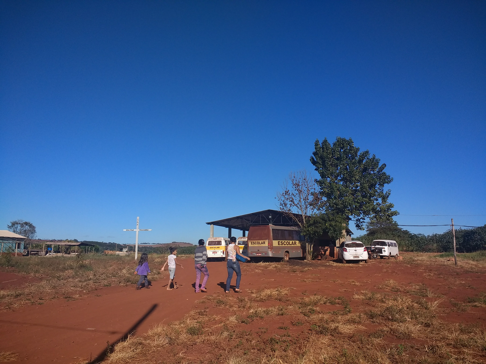
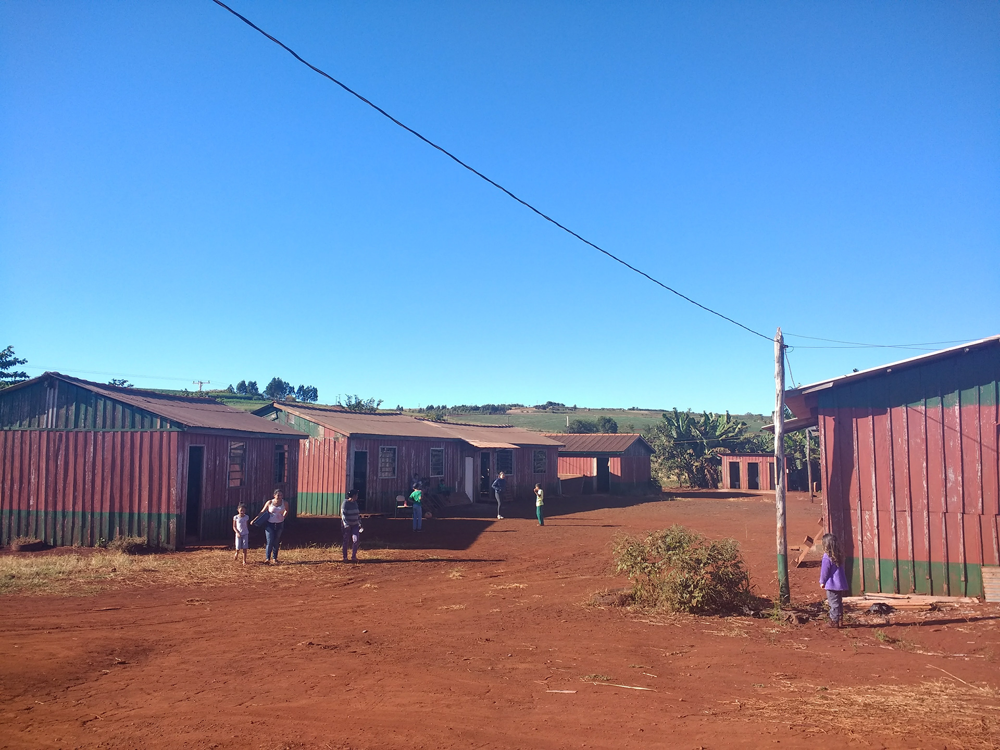
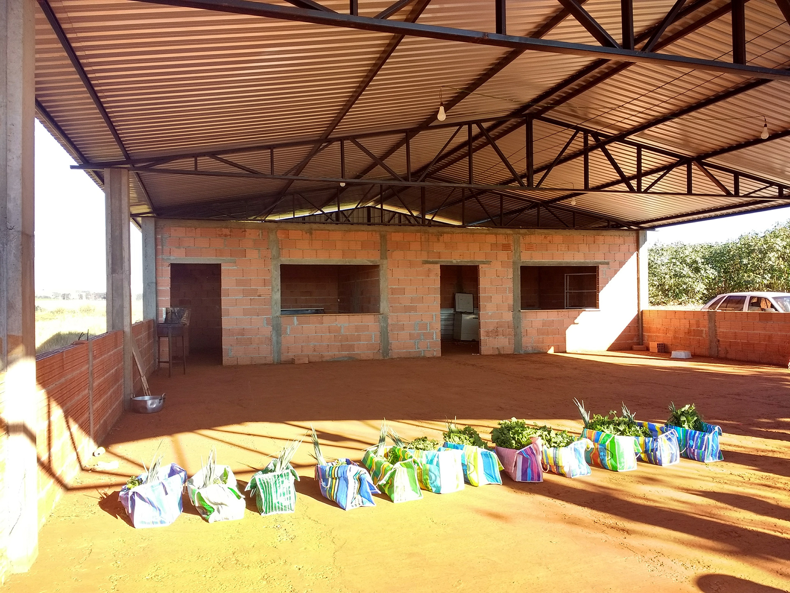
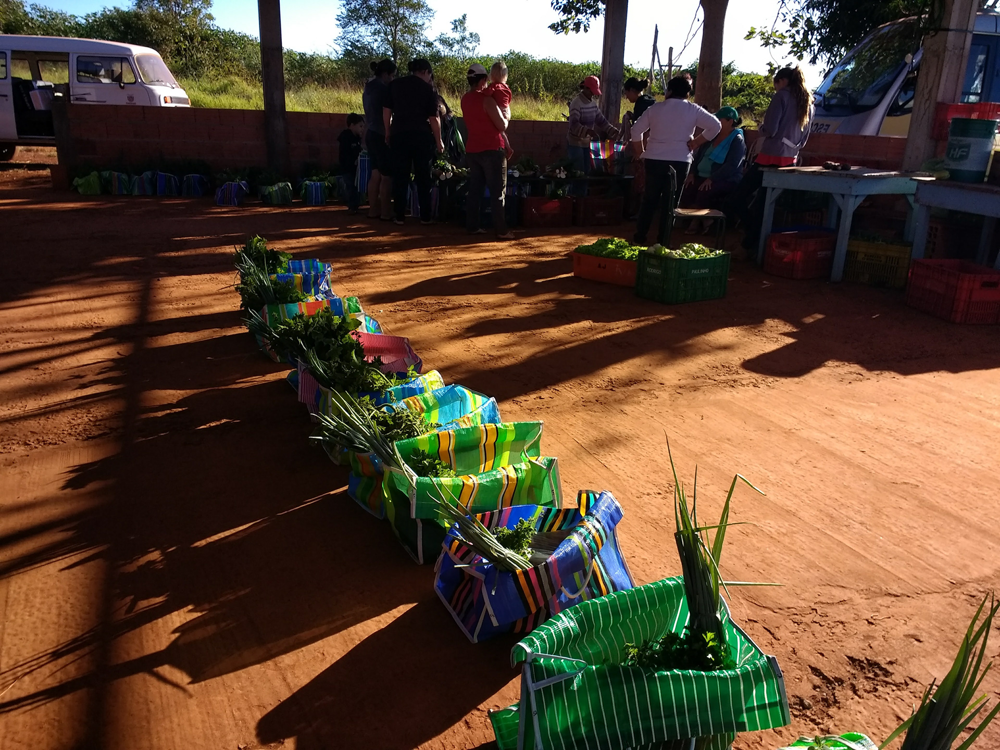
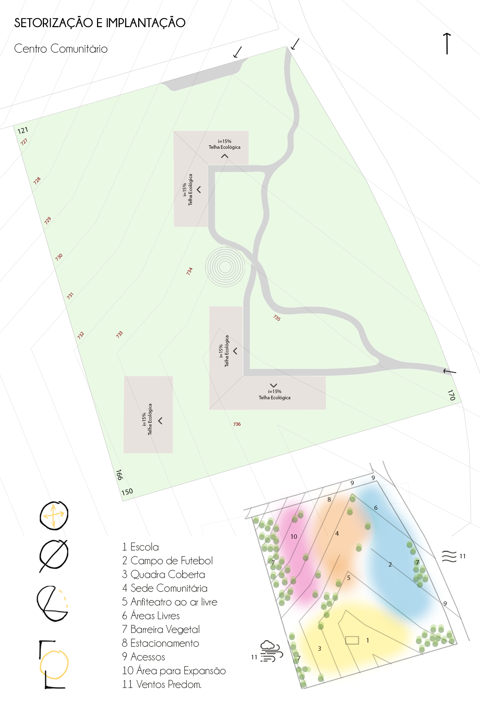
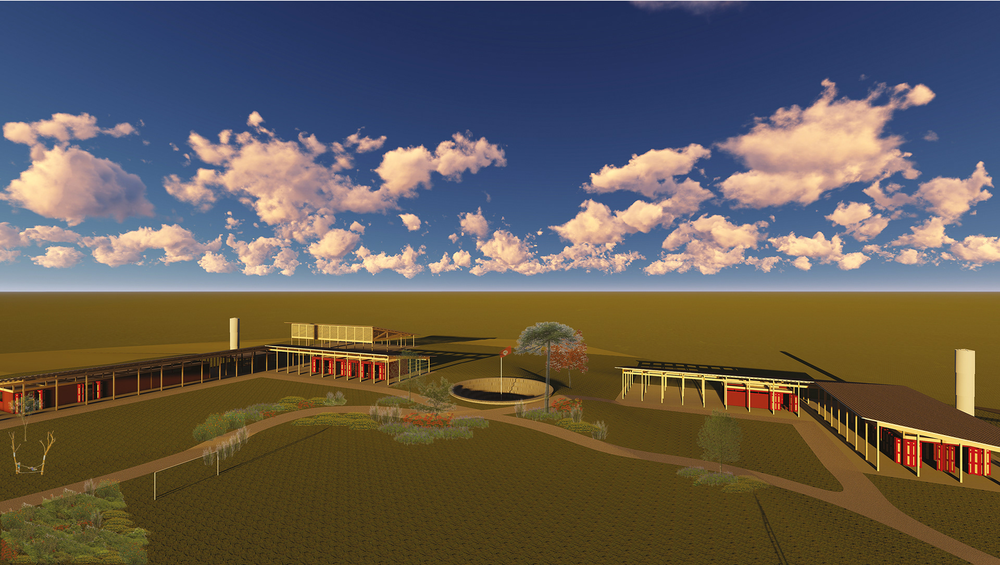
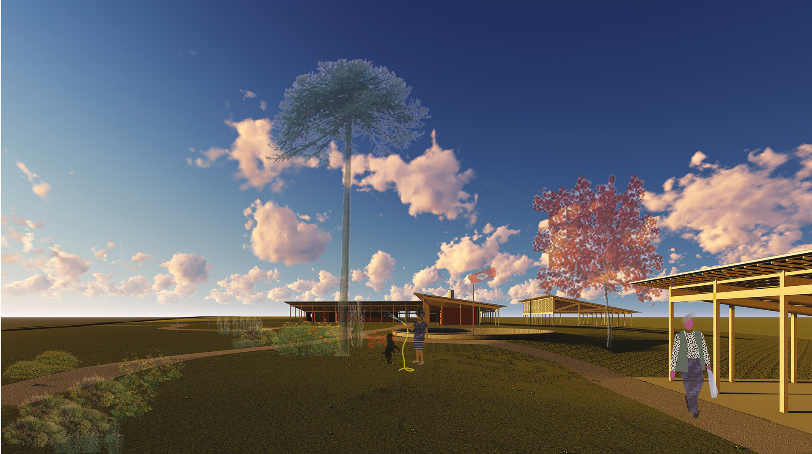
Propõe-se a terra como principal material a ser utilizado para a construção das edificações devido a sua alta disponibilidade no local, diminuindo possíveis custos de transporte e reduzindo os gastos com materiais. A técnica escolhida para construção dos edifícios foi o Adobe, devido à semelhança técnica com a alvenaria de tijolos cerâmicos, o que facilita a capacitação de mão de obra local para a construção do Centro Comunitário.
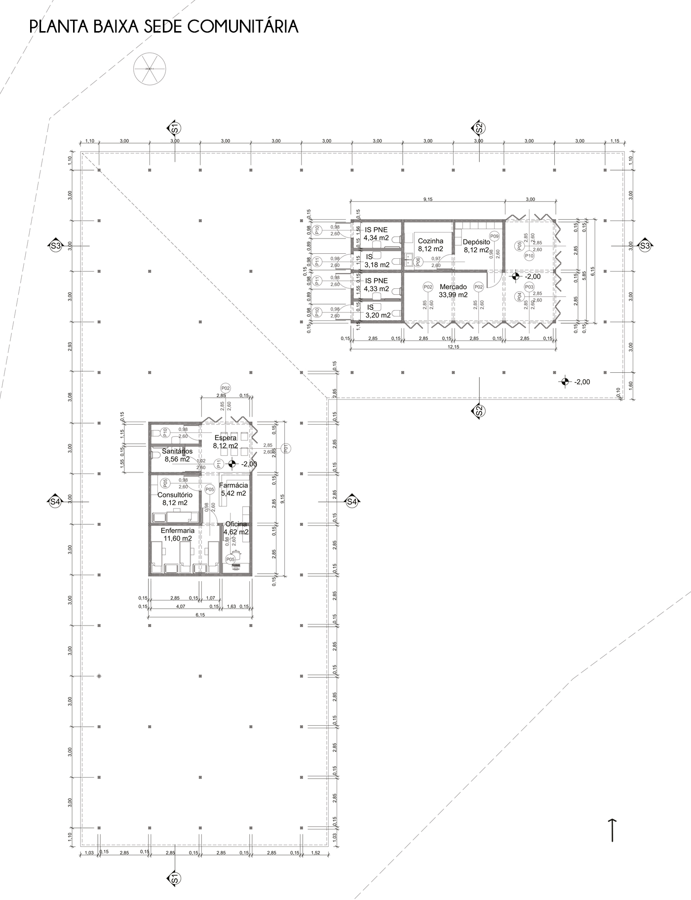
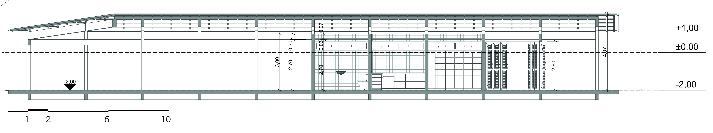
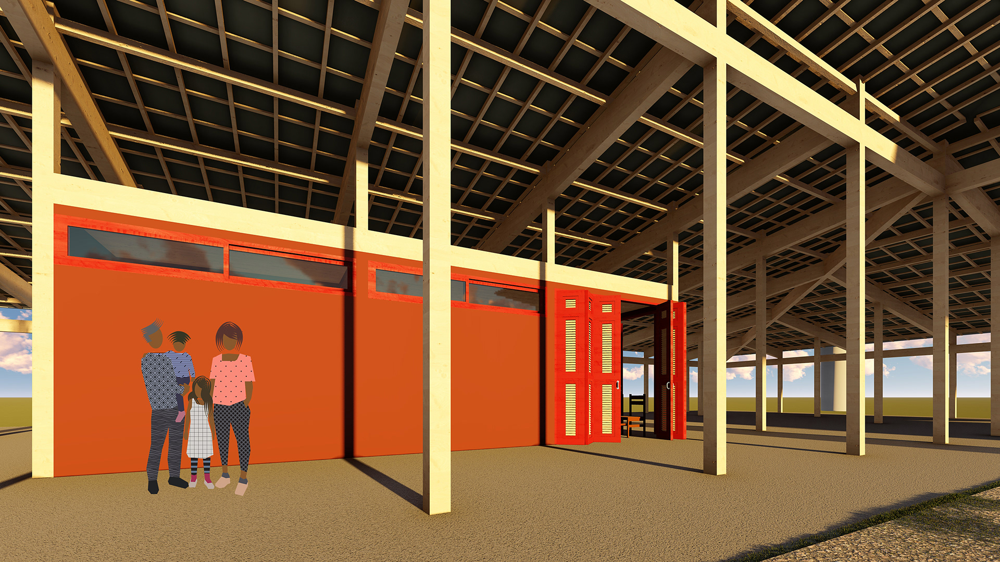
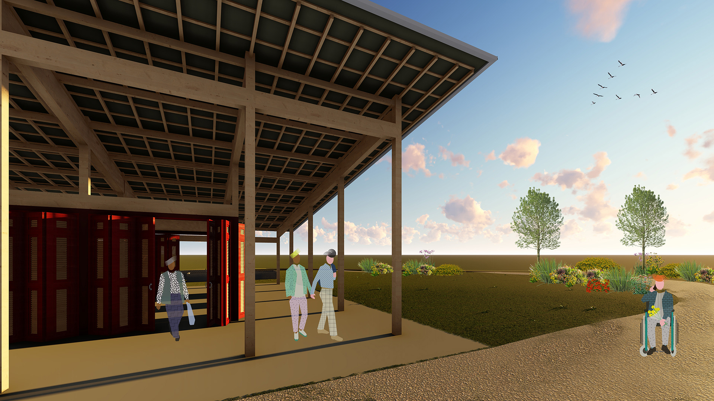
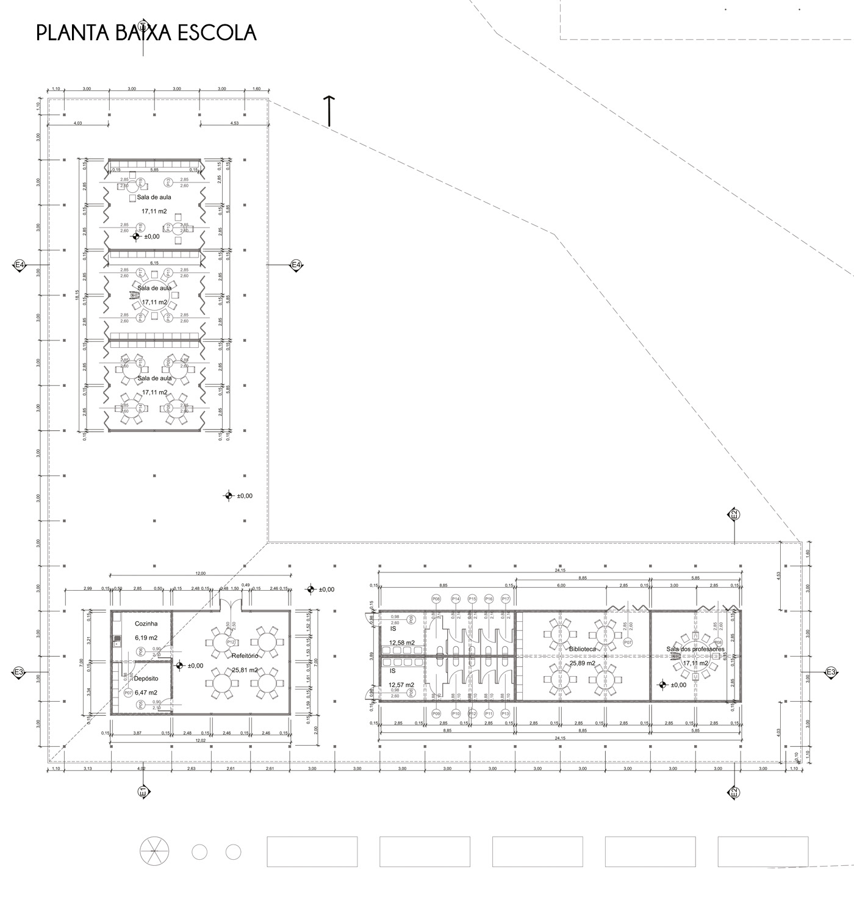
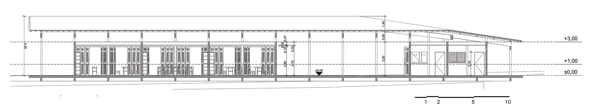
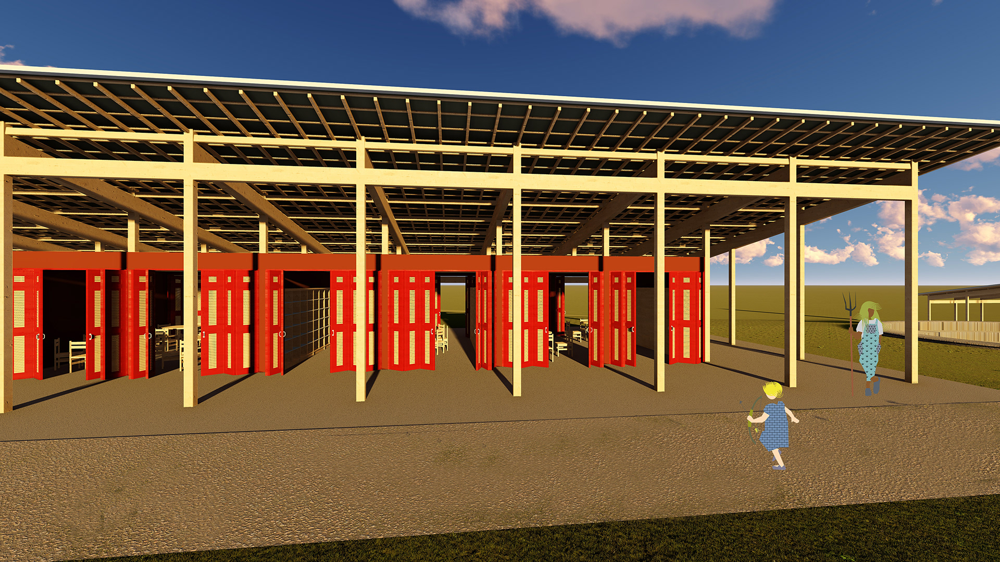
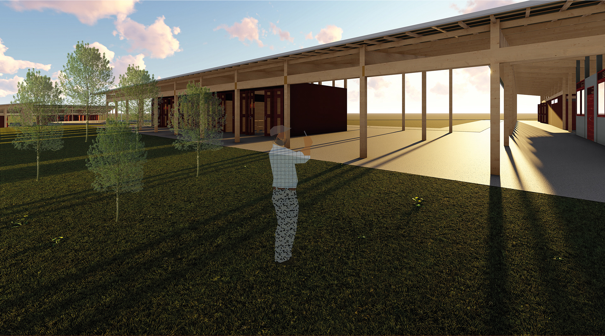
A proposta paisagística visa a criação e manutenção de um sistema orgânico, diverso e equilibrado, oferecendo à população do assentamento um espaço de contemplação, lazer, socialização, e aprendizado, no qual possam experimentar novas formas de se relacionar com a natureza e, assim, se sentirem incentivados e confiantes para realizar uma transição mais sustentável e ecológica em suas produções individuais e proporcionando
maior qualidade de vida.
Foi adotada a metodologia de camadas desenvolvida por Tomas Rainer para criar um jardim abundante e legível ao mesmo tempo. De acordo com o paisagista, a grande mudança para a próxima década é alterar a visão de plantas como elementos individuais para redes sociais, ou seja, comunidades de espécies compatíveis entrelaçadas em densos mosaicos. As estratégias que direcionam a seleção de espécies e desenho são o desenvolvimento de layers, reposição constante de mulch, combinações estáveis de plantas, ocupação majoritária das camadas abaixo do nível dos olhos e uso de cor. As camadas baseiam-se principalmente em como as plantas se reproduzem e ocupam o espaço, distribuindo os conjuntos de espécies em Estruturais (structural), Agrupadas (cluster) ou Matriz (matrix).
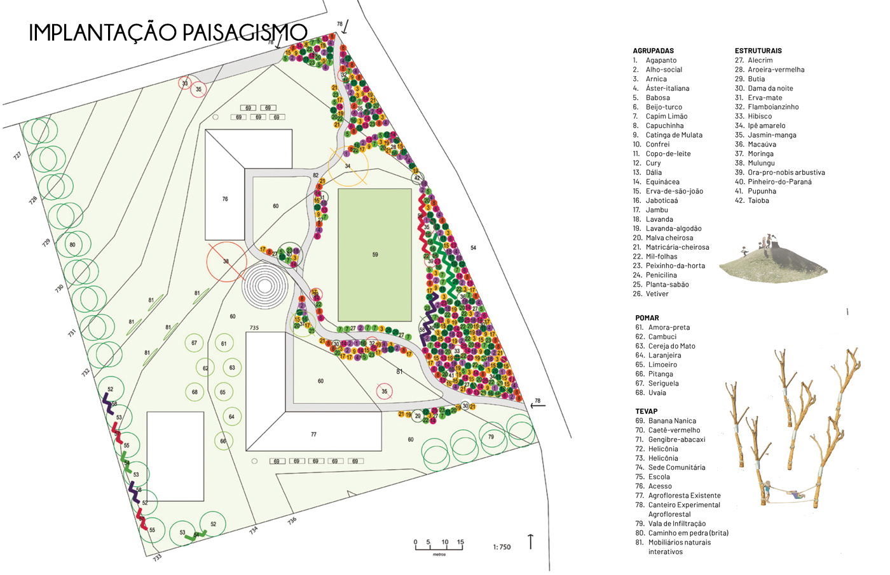
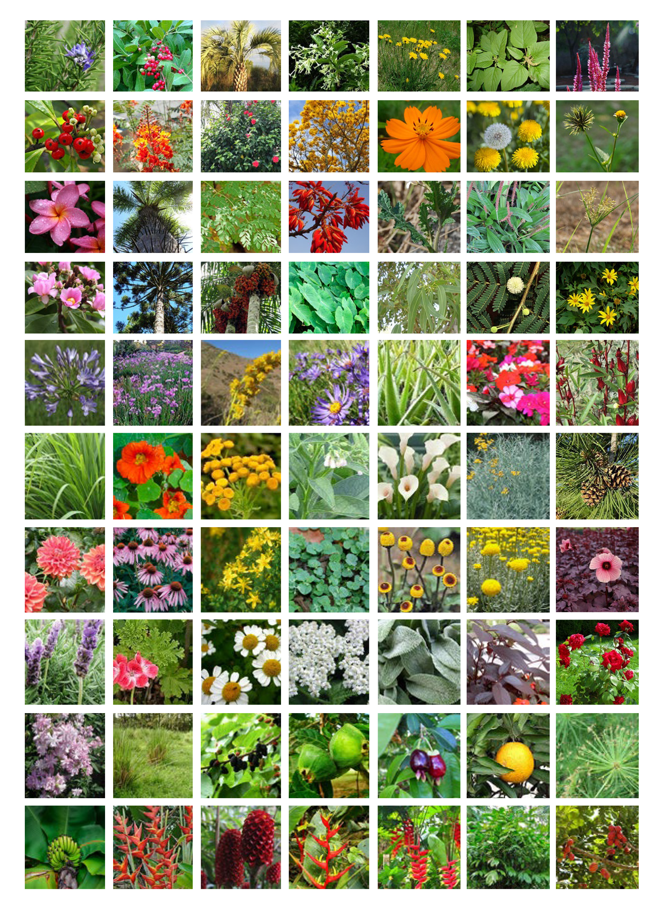